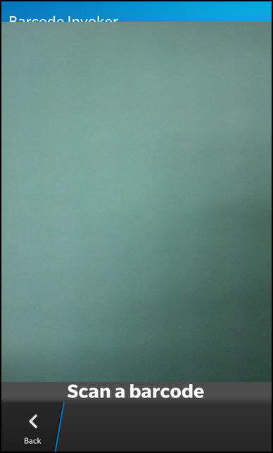

Barcode Invoker Example
Files:
- barcodeinvoker/assets/main.qml
- barcodeinvoker/src/BarcodeInvoker.cpp
- barcodeinvoker/src/BarcodeInvoker.hpp
- barcodeinvoker/src/main.cpp
- barcodeinvoker/barcodeinvoker.pro
- barcodeinvoker/translations/barcodeinvoker.pro
Description
The Barcode Invoker example allows the user to scan barcodes via a Card through the InvokeManager by issuing scan requests.


Overview
In this example we'll learn how to use the InvokeManager class to issue barcode scanning requests to the BarcodeScanner Card and retrieve the decoded barcode data from the Card.
The UI
The simplistic UI of this sample application consists of a Button to issue requests, and a Label to display the request results.
Container { layout: DockLayout { } background: Color.Black Container { horizontalAlignment: HorizontalAlignment.Fill verticalAlignment: VerticalAlignment.Fill bottomPadding: 20 layout: DockLayout { } // The background image ImageView { horizontalAlignment: HorizontalAlignment.Fill verticalAlignment: VerticalAlignment.Fill imageSource: "asset:///images/background.png" } } Container { horizontalAlignment: HorizontalAlignment.Fill verticalAlignment: VerticalAlignment.Fill topPadding: 20 leftPadding: 20 bottomPadding: 20 layout: DockLayout { } //Button to invoke the barcodescanner card - for this to work //you have to have barcodescanner sample on device Button { horizontalAlignment: HorizontalAlignment.Center verticalAlignment: VerticalAlignment.Top text: qsTr("Scan Barcode") onClicked: { _barcodeInvoker.onInvokeButtonClicked() } } //displays barcode data Label { horizontalAlignment: HorizontalAlignment.Left verticalAlignment: VerticalAlignment.Bottom text: qsTr("Barcode: %1").arg(_barcodeInvoker.barcode) textStyle.color: Color.White } } }
When the Button is clicked, the request is sent and the barcodescanner card is invoked and transitions over the parent to begin barcode scanning. Once the barcode is read and decoded, the card sends a cardDone() signal to the requesting parent, transitions off screen and is pooled to await subsequent invokation requests. The Label's text property is bound to the BarcodeInvoker barcode property, which gets updated when barcodeChanged() signal is emited.
BarcodeInvoker::BarcodeInvoker(QObject* parent) : QObject(parent) { connect(new InvokeManager(this), SIGNAL(childCardDone(const bb::system::CardDoneMessage&)), this, SLOT(onChildCardDone(const bb::system::CardDoneMessage&))); }
Constructor initializes InvokeManager and hooks into the signal/slot mechanism to receive childCardDone() signals from the invoked Card.
void BarcodeInvoker::onInvokeButtonClicked() const { InvokeManager* imanager = qobject_cast<InvokeManager*>(sender()); InvokeRequest invokeRequest; invokeRequest.setTarget("com.example.BarcodeScanner"); invokeRequest.setAction("community.action.SCANBARCODE"); const InvokeTargetReply *invokeReply = imanager->invoke(invokeRequest); if (!invokeReply) qWarning() << "failed to sent invoke request message"; } void BarcodeInvoker::onChildCardDone(const bb::system::CardDoneMessage &message) { setBarcode(message.data()); } QString BarcodeInvoker::barcode() const { return m_barcode; } void BarcodeInvoker::setBarcode(const QString &barcode) { if (m_barcode == barcode) return; m_barcode = barcode; Q_EMIT barcodeChanged(); }
The onInvokeButtonClicked() method creates InvokeRequest and invokes the request via InvokeManager. Once the card finishes processing the onChildCardDone() is invoked and sets the barcode textual data from the result, which than emits a barcodeChanged() signal via the setBarcode() method for the QML to update the Label's text property.